Over three years, I worked across social media management, content production, and strategic campaigns focused on diversity, inclusion, and social impact.
Key projects included:
The Getty collaboration features diverse models to challenge traditional beauty stereotypes.
Campaigns addressing the impact of social media on teenagers’ self-esteem.
The Crown Project, supporting legislation in the U.S. to combat discrimination against Black women’s natural hair styles.
I contributed from initial ideation and strategic planning through to rollout, copywriting briefs, CMS management, and creative direction. This experience strengthened my ability to handle complex, socially relevant campaigns with care and authenticity.
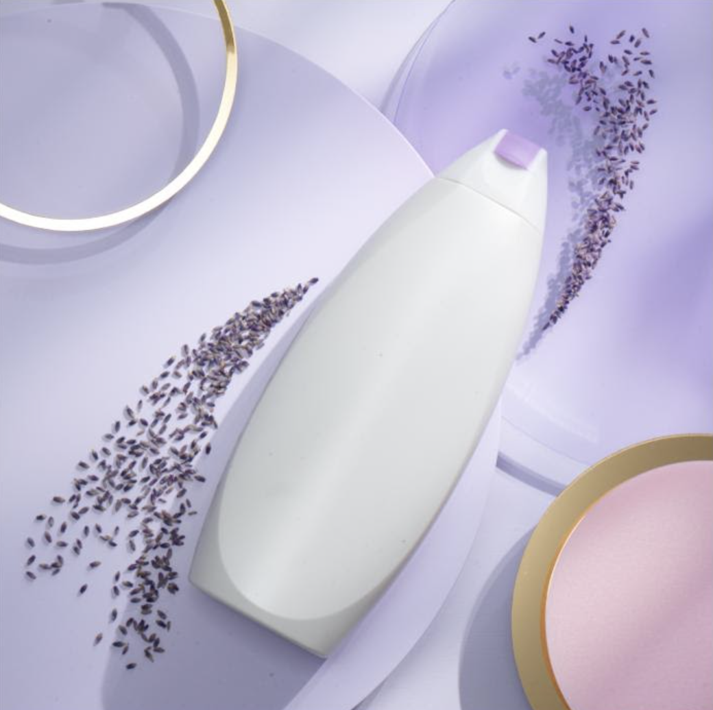
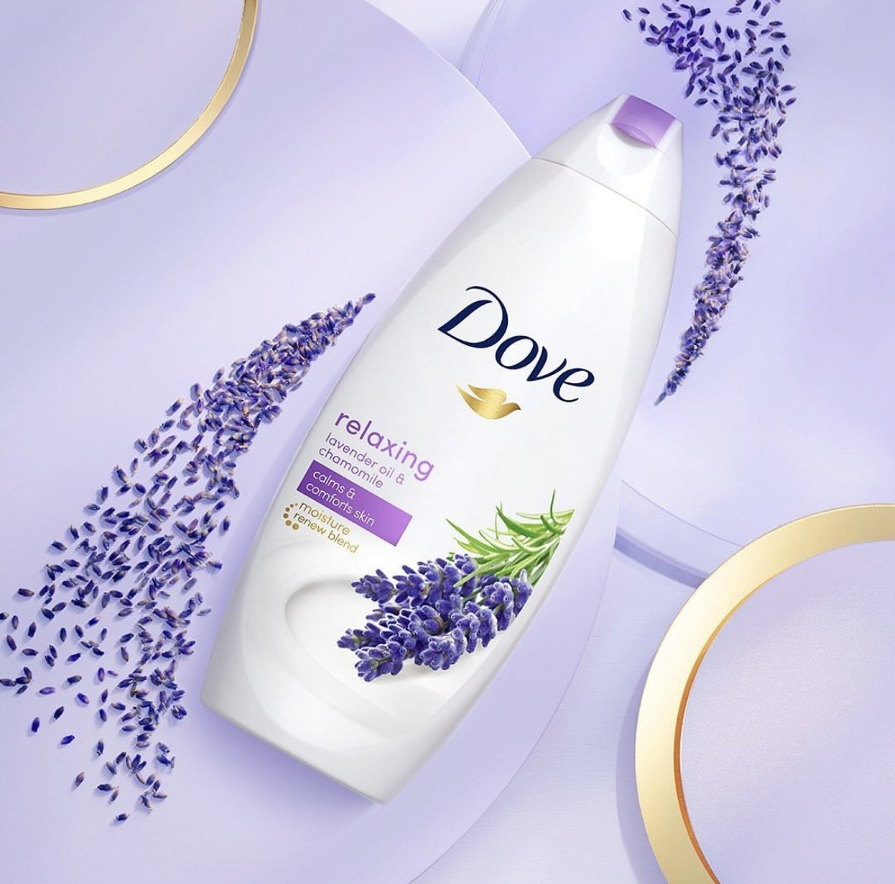
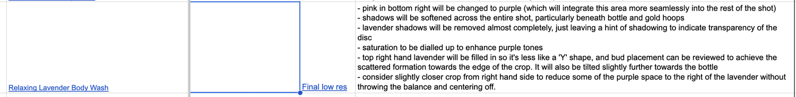
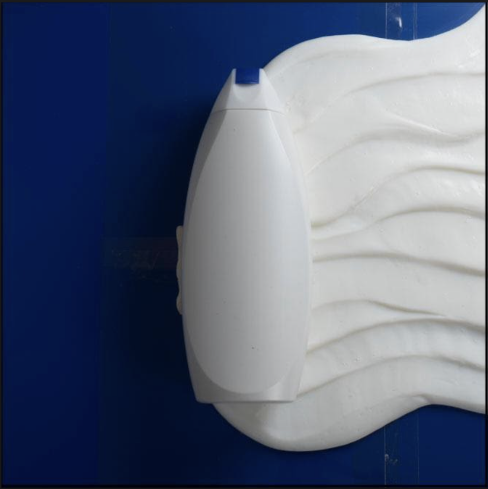
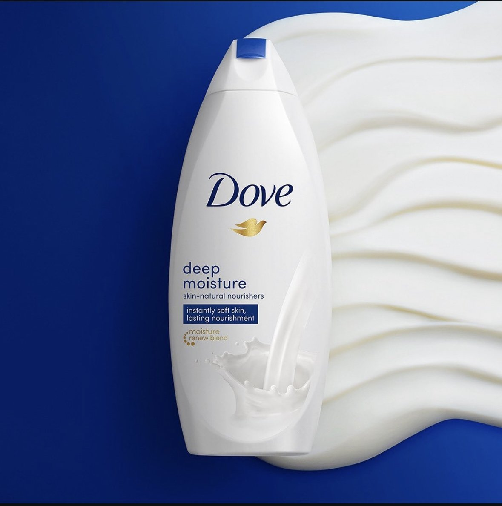
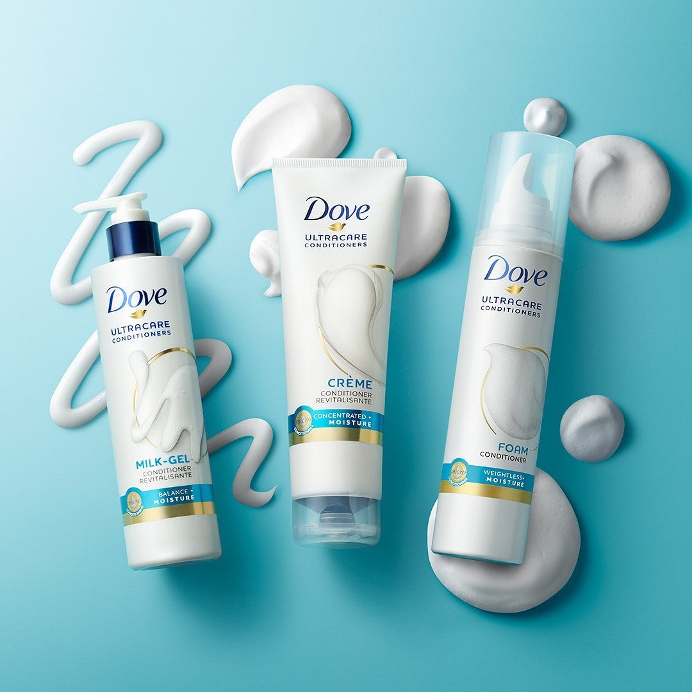
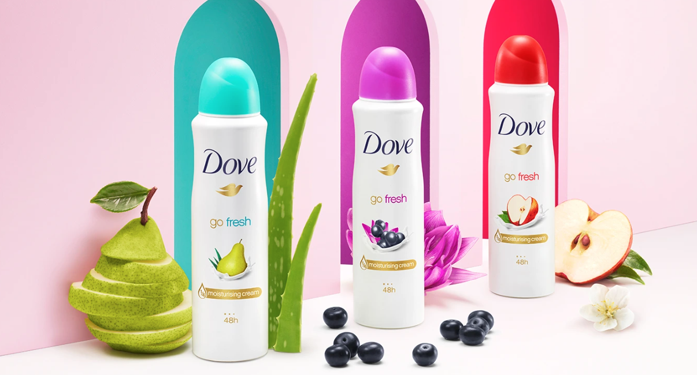
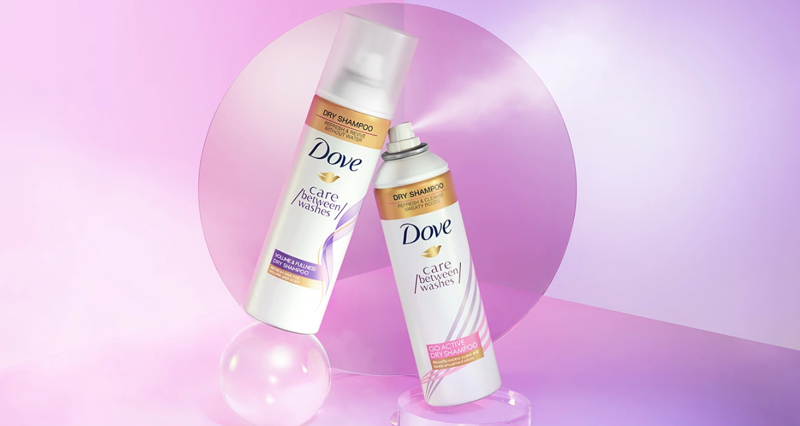
Set management
Creation of PPM, staging docs and call-sheets
Management of props and products within the budgets
Sourcing the photographer
Client management on-set
Management of the retoucher and post-production process
Post-production mamagement
Creative collaborators:
Photography: Chris Turner
Set Design: Kara Simms
Styling: Leslie Sendall
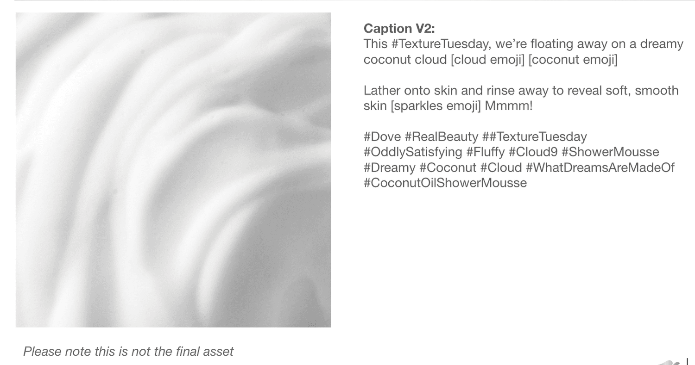
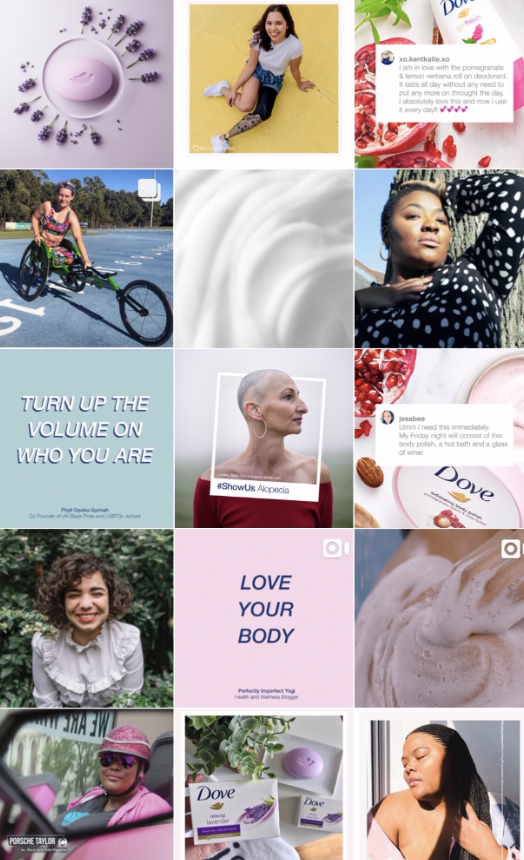
Management of Dove Organic's Instagram channel, including calendar scheduling, ideation, and helping the channel reach 500k followers.
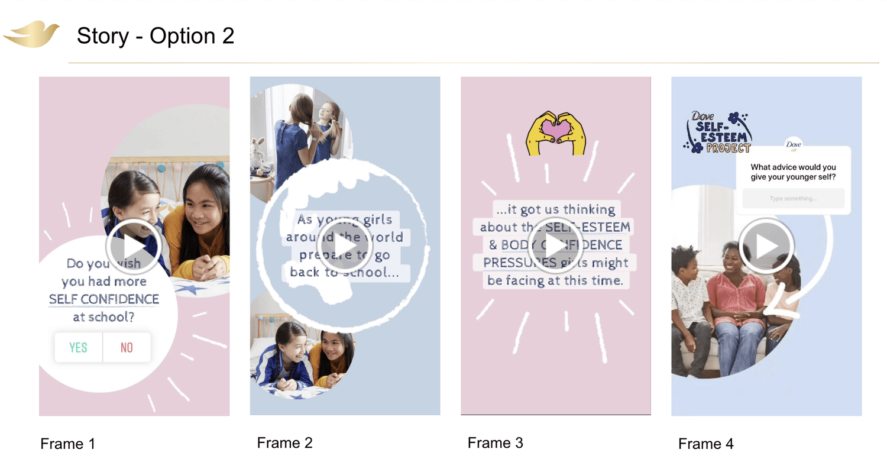
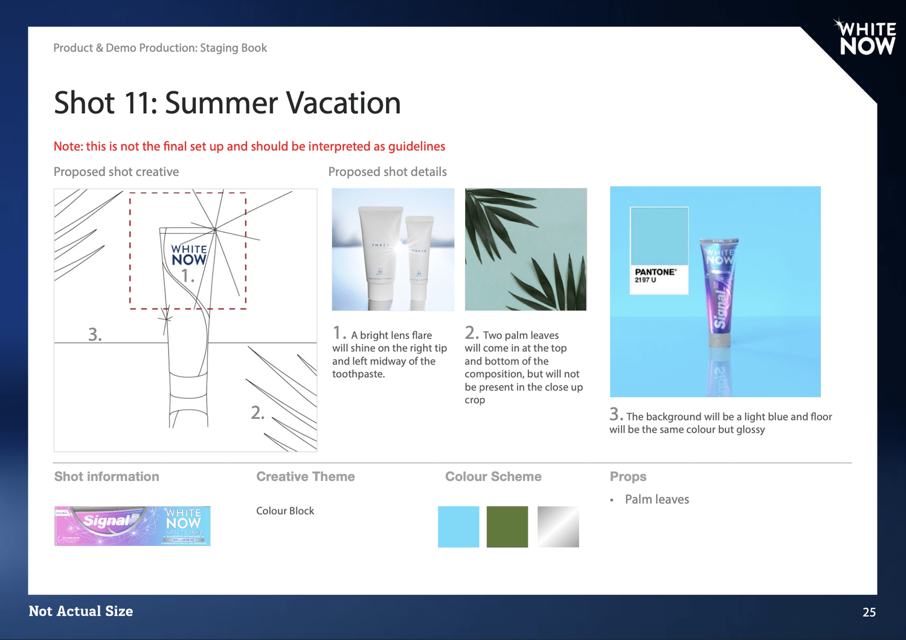
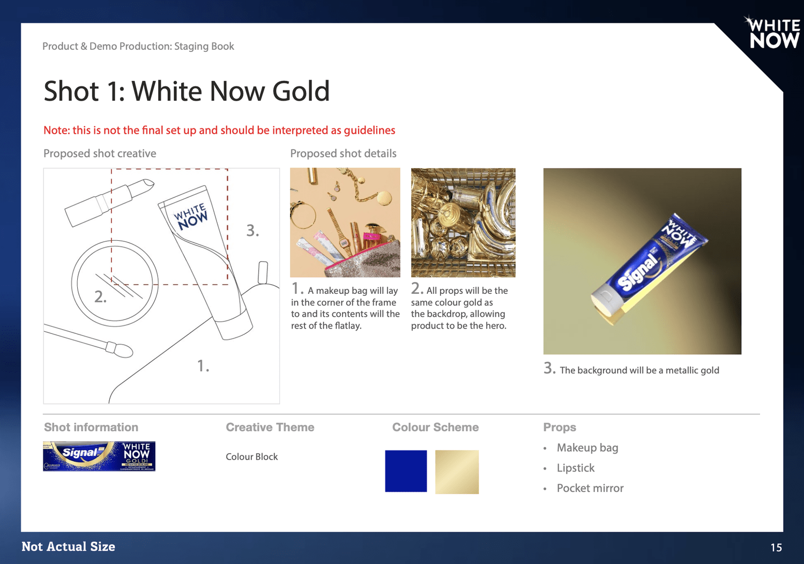
Support with concepting and set management
Overall project and schedule management u Client sign-off on set
edit notes, Product-specific considerations